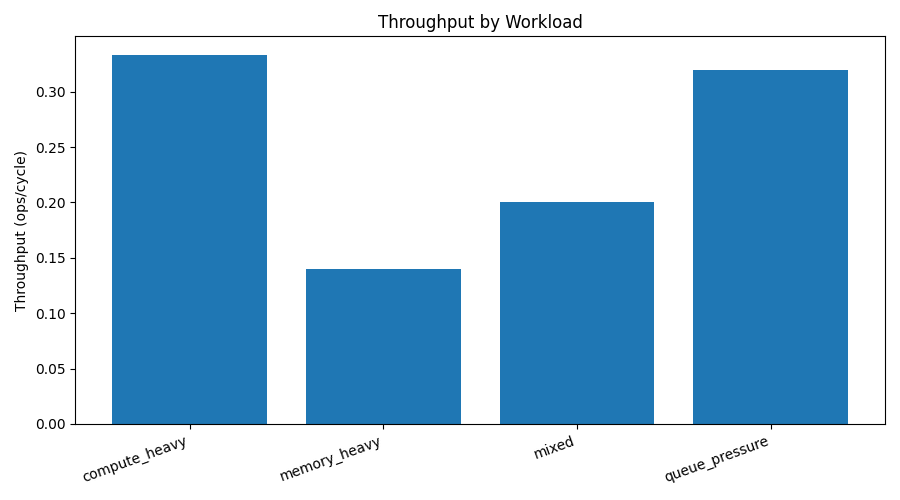
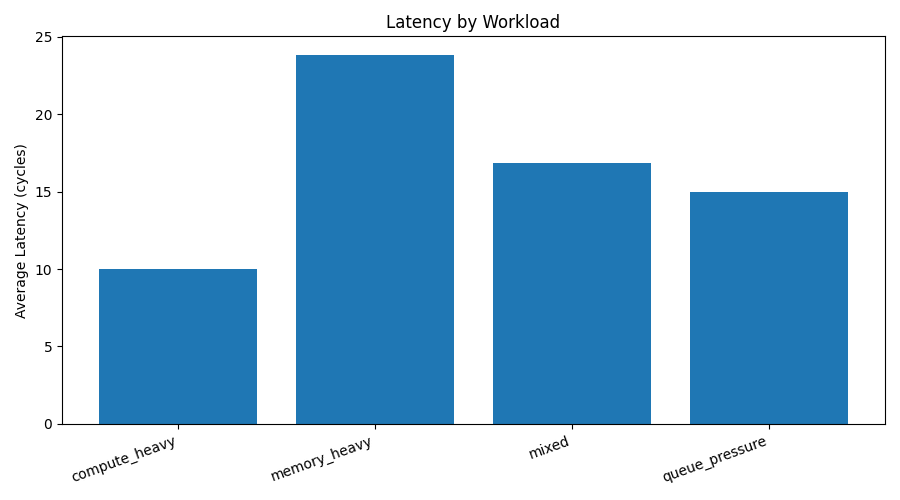
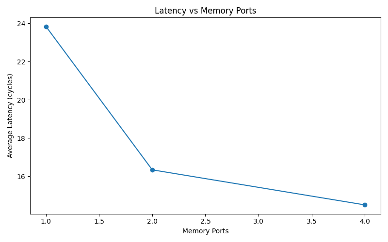
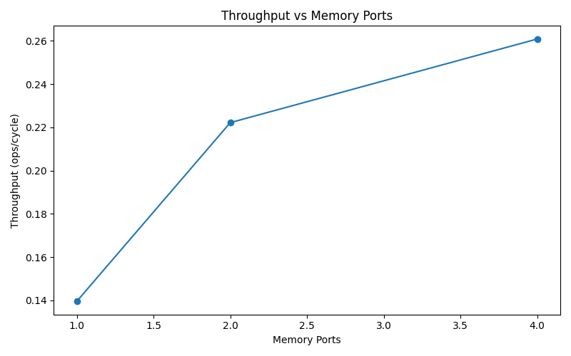
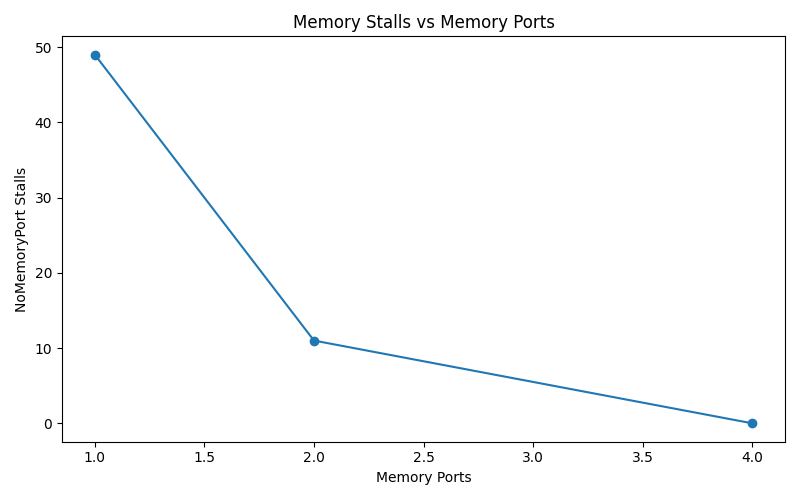

Static visual report for workload-level accelerator pipeline analysis. This is not a cycle-accurate GPU simulator; it visualizes throughput, latency, queue pressure, and bottleneck shifts from reproducible simulator reports.
| Workload | Throughput | Avg Latency | Top Bottleneck | Classification |
|---|---|---|---|---|
compute_heavy |
0.3333 | 10.0000 | WaitingDependency |
dependency-bound |
memory_heavy |
0.1395 | 23.8333 | NoMemoryPort |
memory-bound |
mixed |
0.2000 | 16.8333 | WaitingDependency |
dependency-bound with memory pressure |
queue_pressure |
0.3200 | 15.0000 | WaitingDependency |
dependency-bound with compute contention |
NoMemoryPort -> WaitingDependency
NoMemoryPort stall reduction: 49
| Memory Ports | Throughput | Avg Latency | Top Bottleneck | NoMemoryPort Stalls |
|---|---|---|---|---|
| 1 | 0.1395 | 23.8333 | NoMemoryPort |
49 |
| 2 | 0.2222 | 16.3333 | WaitingDependency |
11 |
| 4 | 0.2609 | 14.5000 | WaitingDependency |
0 |





The simulator shows that increasing memory ports removes the memory bottleneck on memory-heavy workloads, but exposes the next limiting factor: dependency-bound execution. This mirrors real performance engineering: optimization shifts bottlenecks rather than eliminating them.